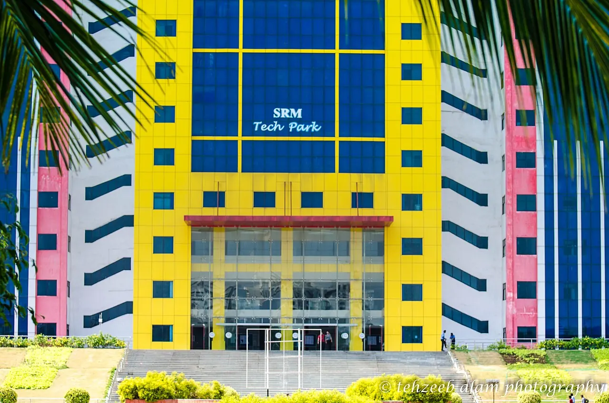

Overview
Every section on a second-level page follows the homepage pattern: a heading, a short paragraph and one link. Replace this copy with the college's own overview. Template copy
- Departments
- 00
- Programmes
- 00
- NIRF Engineering 2025
- #14

Departments
List departments here, each linking to its own page. Template copy
Admissions
Engineering programmes admit through SRMJEEE, the SRM Joint Engineering Entrance Examination.
Contact
Engineering, agriculture and architecture admissions: +91 70 2645 2645